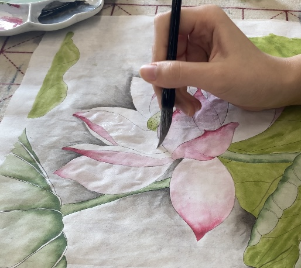
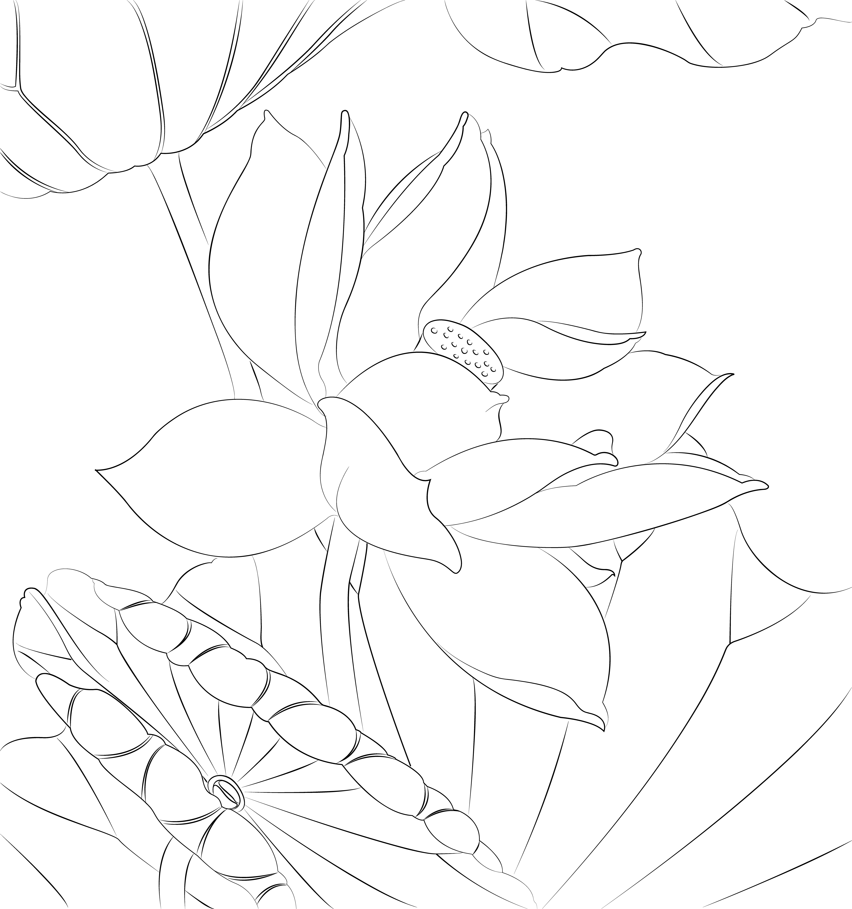

There is a video tutorial in the bottom!
* Each step in this instruction corresponds to a layer of the painting. Therefore, there may be several steps in one "step".
 Draw the linear on regular paper, or draw it digitally then print it. Beginners can choose to purchase a Gongbi linear book for learning.

Get everything right. Put the linear under the shimmer-sized xuan paper.
The xuan paper will be wet and easy to tear during painting. Therefore, you can leave a margin on four sides to protect the painting.

Mix ink with water to a light ink, and use the whisker brush to draw lines on the xuan paper according to the linear underneath. Please note that you must wait for the paper to dry before proceeding to the next step (this applies to all the steps below!)

Mix Titanium White with water, colouring the lotus petals with a goat hair flow brush.
Mix Gamboge and Cyanine Blue (more gamboge, less Cyanine Blue) with water, colouring the lotus leaves.
Use the Goat Hair Flow Brush to dip in the light green just used, add a little Malachite and Titanium White, and dip the Large Mixed Hair Flow Brush in water. Use the Goat Hair Flow Brush to dye the root of the reverse side of the lotus leaves, and then spread the colour with the Large Mixed Hair Flow Brush. Repeat the step to colour the lotus stem.
Use the Small Weasel Hair Brush to dip in the light green, and dip the Goat Hair Flow Brush in water. Use the small weasel hair brush to dye the lotus core, and then spread the colour with the Goat Hair Flow Brush.
Use the Goat Hair Flow Brush to dip in ink, and dip the Large Mixed Hair Flow Brush in water. Use the Goat Hair Flow Brush to dye along the edge of the lotus leaves and lotus, and then spread the ink with the Large Mixed Hair Flow Brush. This is the base colour of the background.

Use the Goat Hair Flow Brush to dip in Wosin Red and a little Titanium White and Rouge, and dip the Large Mixed Hair Flow Brush in water. Use the Goat Hair Flow Brush to dye lotus petals, and then spread the colour with the Large Mixed Hair Flow Brush. From the top of the petals to the center.
Repeat the previous method and use Cyanine Blue to dye the lotus leaves. Do not paint on the stems of the lotus leaves.

Add more Malachite and Titanium White to the green just used, and dip the Large Mixed Hair Flow Brush in water. Use the Goat Hair Flow Brush to dye from the edge of the reverse side of the lotus leaves, and then spread the colour with the other brush.

Use the Large Mixed Hair Flow Brush dip in Phthalo Cyanine Blue with water to paint the background.
Use the Whisker Brush dip in ink to draw small thorns on the lotus stem.